创建第一个项目
上一页完成了首次设置，让我们继续配置吧！下面我们先走一遍 Web 配置模式——这是推荐的方式；习惯用终端的朋友，也可以直接跳到文末的交互式命令行版本。
Web 配置模式#
这是推荐的方式。按 Y 后管理端会自动启动 Web 管理界面。下面就是按 Y 后终端显示的内容：
Web 管理界面已启动，监听：127.0.0.1:18080
如果管理端运行在当前电脑：
请直接在浏览器打开：http://127.0.0.1:18080/
如果管理端运行在远程服务器且保持安全的 127.0.0.1 监听：
1. 在您自己的电脑上打开终端，运行以下 SSH 隧道命令：
ssh -N -L 18080:127.0.0.1:18080 用户名@您的服务器地址
2. 保持 SSH 窗口运行，再在自己电脑的浏览器打开：
http://127.0.0.1:18080/
同机 Caddy/Nginx 可代理 127.0.0.1 到公网 443，这是推荐部署方式。
按 Ctrl+C 停止服务并返回主菜单。管理端在当前电脑：直接打开 http://127.0.0.1:18080/。管理端在远程服务器：在自己电脑的终端运行 ssh -N -L 18080:127.0.0.1:18080 用户名@您的服务器地址，保持窗口运行，再打开这个地址。需要从公网登录时，用 Caddy 或 Nginx 配置 HTTPS。
打开浏览器后的第一步：创建管理员账户#
首次打开 Web 管理界面时，会先看到下面的页面：

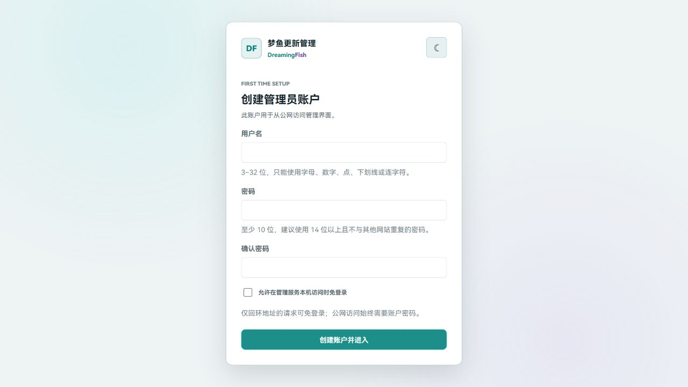
注册完成后，你可以选择在本机或 SSH 访问时免登录：只要勾选了“允许在管理服务本机访问时免登录”，通过 127.0.0.1 访问管理页面就不用每次输入密码；公网访问始终需要账户密码。
第 2 步 · 创建项目#
登录后，点击概览页的“＋ 新建项目”，让我们把第一个项目建起来吧！弹窗分成两段，先填必备设置，再看玩家端个性化：
- 创建必备设置：先填好项目 ID、项目显示名称、要管理的文件目录和玩家端更新器访问地址，这四项决定项目怎么保存、文件从哪里读取，以及玩家端去哪里检查更新。
- 玩家端个性化：标题、品牌名和服务器地址都有各自的用途。先用默认值创建也可以，之后到“玩家端个性化”里慢慢调整。
这里有三个容易出错的地方，先提醒你：
- 项目 ID：创建后不要随意改。
- 要管理的文件目录：这是你要管理的文件目录，不要和管理端
data混在一起。 - 玩家端更新器访问地址：必须是玩家电脑能访问的公网地址（例如公网端口映射到内部 8080），不能填
127.0.0.1或内网地址。
个性化文字分别出现在玩家端这些位置：玩家端主标题是首页左侧的大号标题，玩家端副标题就在它下方；中文品牌名和英文品牌名并排显示在窗口左上角；Minecraft 服务器地址会出现在服务器信息区域，方便玩家查看和复制。它和更新器访问地址不是一回事，填写你的游戏服务器地址就好。

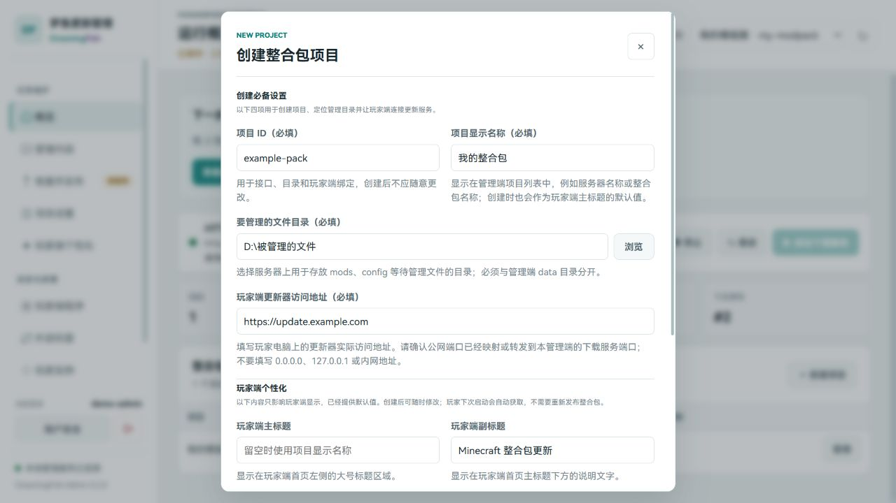
继续填写玩家端个性化

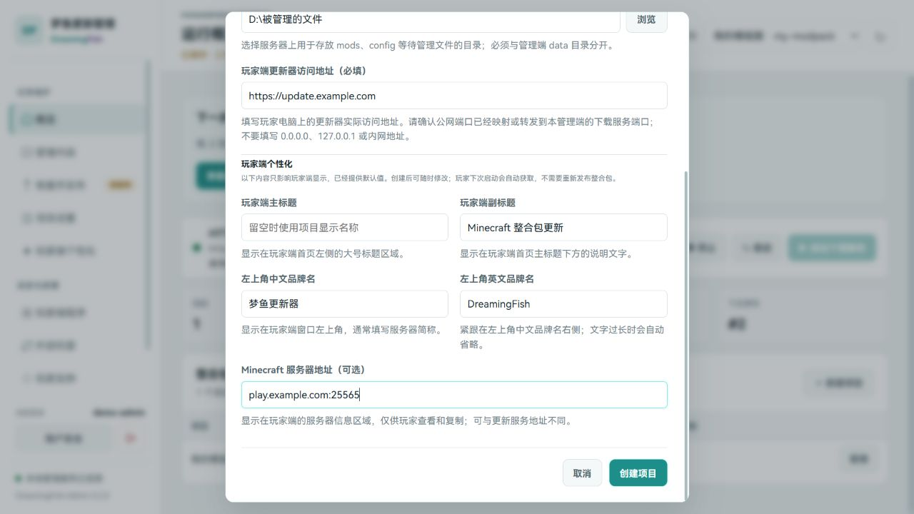
第 3 步 · 上传文件#
项目建好后进入“管理内容”，先在左边选择文件夹。文件已经在服务器上，放进标准目录后点“刷新”；还在自己电脑上，就点“添加文件”，选择文件或整个文件夹。
- modpack-source/标准目录
- mods/2 个文件
- example-core-1.0.jar强制同步
- performance-helper-1.0.jar普通同步
- config/3 个文件
这里看到的文件不会立刻影响玩家，只有扫描并发布新版本后才会生效。

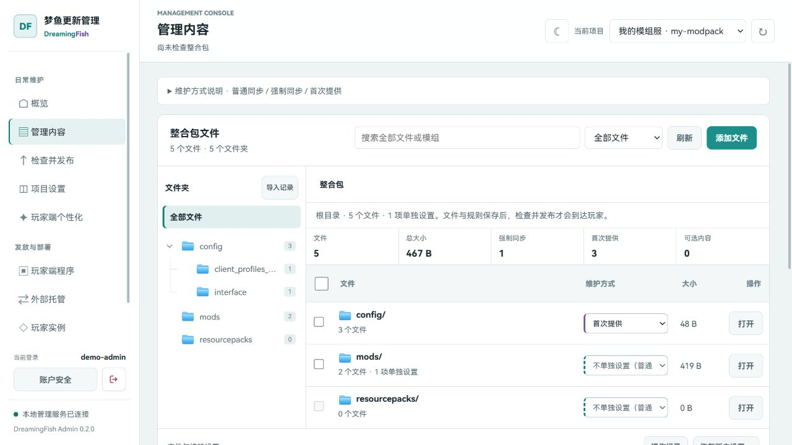
文件夹和单个文件都可以直接选择维护方式。想统一整个文件夹，就改文件夹那一行；只想锁定某个核心模组，就改这个模组那一行：

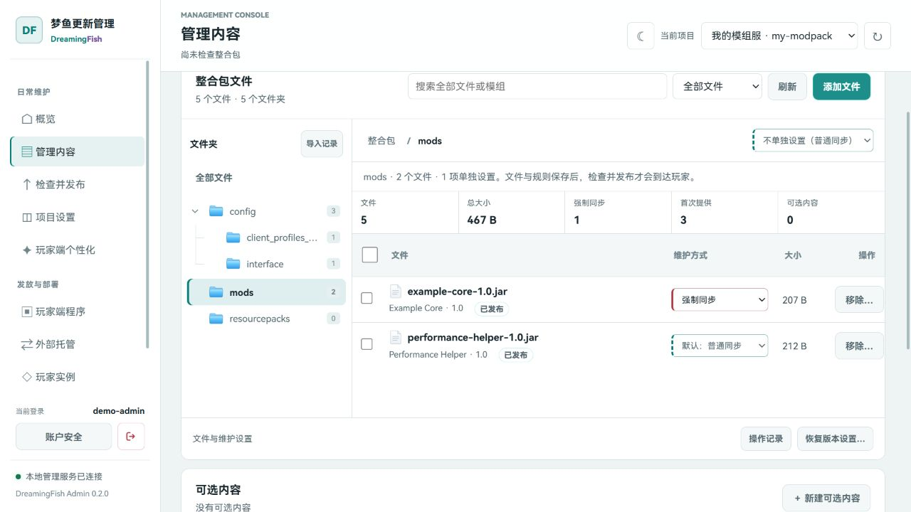
修改整个文件夹前，先确认影响范围

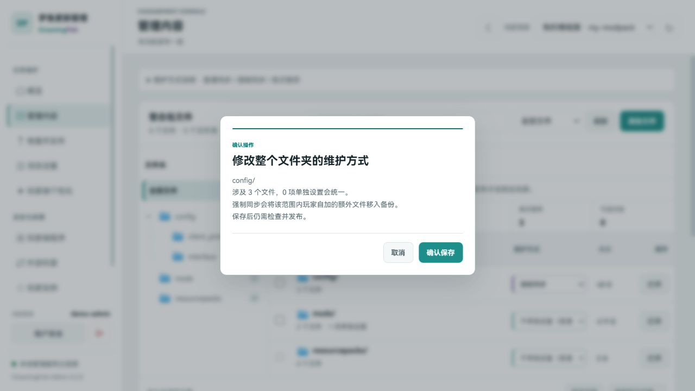
三种维护方式#
不确定时保持默认就好。日常维护主要用下面三种方式：
普通同步
跟着服主更新，保留玩家选择。
更新时先备份玩家的修改，再换成发布版本。玩家额外添加的内容默认保留。
强制同步
指定内容必须和服主保持一致。
强制单个文件，只锁定这个文件；强制整个文件夹，还会把里面的额外文件备份移出。
首次提供
先给一份，之后让玩家自己管。
以后不覆盖，玩家删了也不会反复补回。服主改模板，老玩家的设置仍然保留。
强制同步文件，只要求这个文件与服主一致；强制同步文件夹，还会把里面玩家额外放入的文件备份移出。文件夹规则会继续覆盖以后新增的内容。
你可能会问这个问题：强制同步单个文件的作用，就是可以防止玩家豁免某个文件。比如核心模组，或者你的服务器可能有一些反作弊模组，你可以用强制同步来防止玩家禁用它。
不过，大部分情况下其实都不需要设置强制同步：普通同步已经适合绝大多数整合包项目，等真正遇到需要锁定的内容（比如核心模组、反作弊）时，再按需开启也不迟。
添加文件：先检查，再确认
点“添加文件”，选好文件后再点“暂存并检查清单”。清单会显示保存路径、模组 ID、版本和同名冲突；同一个模组换版本时，还会找出旧文件，供你确认替换。

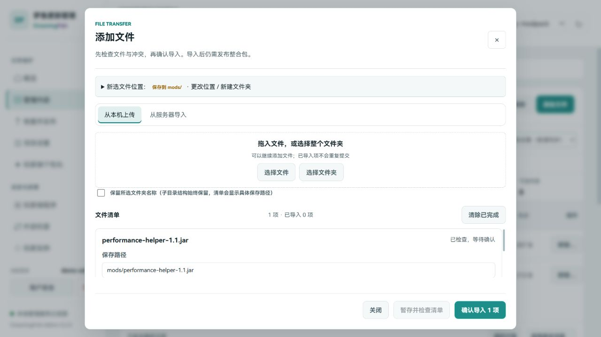
选择文件夹时，可以决定是否保留外层目录名称，里面的子目录都会保留。比如在 mods/ 里选择本机的 mods 文件夹，通常只放它的内容，别变成 mods/mods/；拿不准时，以清单里的完整路径为准。
失败的项可以单独重试，暂停会停止后续任务。想撤回刚才的导入，在文件列表下方打开“操作记录”，找到这一项并点“撤销…”。已经发布过的变化，恢复后还要再发布一次才会影响玩家。
第 4 步 · 扫描并发布#
打开左侧“检查并发布”，点击“↻ 检查整合包内容”。先看新增、更新、移除和预计下载量，重点检查移除后怎么处理：移除玩家副本，还是停止维护、留给玩家。第一次发布一般都是新增；以后删文件时，这一步就很重要了。
确认无误后填写本次显示版本（如 1.0.0）和更新记录，再点击“发布整合包”。最低玩家端版本会自动计算，有特殊需要再展开高级兼容设置。内容发错了，就修正文件再发一个新版本。

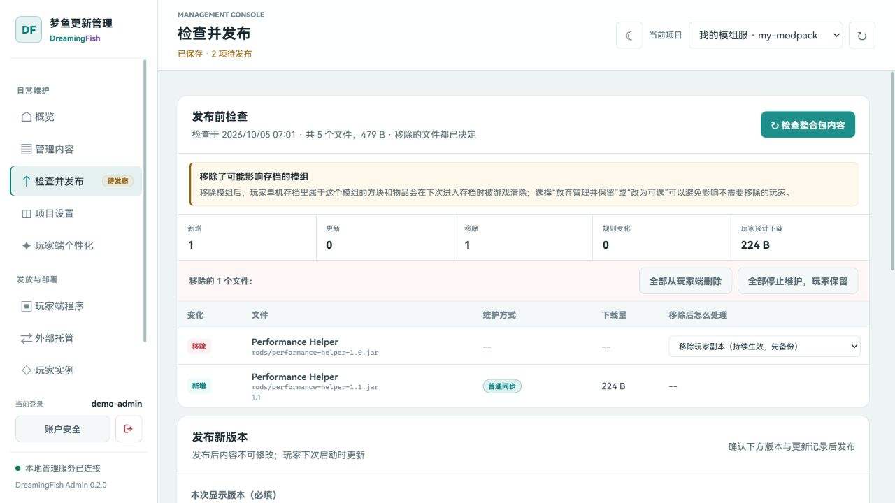
填写版本和更新记录

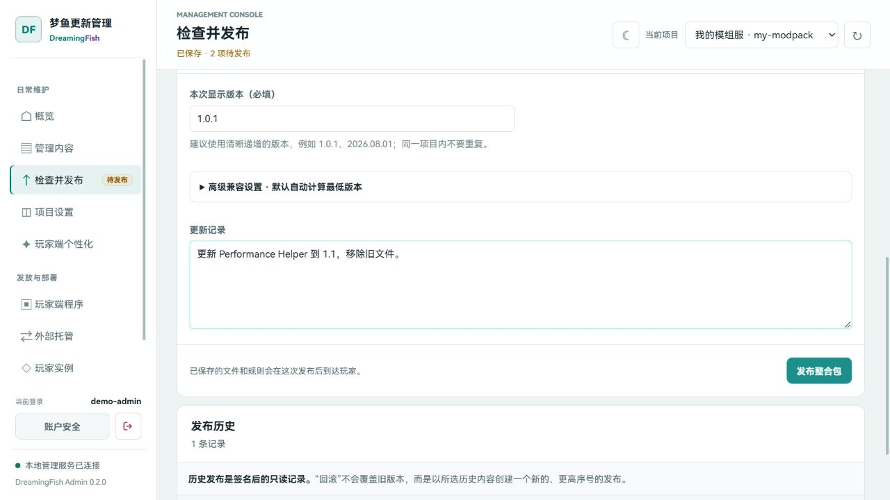
第 5 步 · 制作玩家端（发布玩家端程序）#
刚刚我们已经发布了整合包文件。接下来，第一次还需要发布通用玩家端程序，再生成项目部署包。部署包会带上你的公网地址、项目绑定和公钥，玩家拿到后才能连接这个项目。
玩家端程序和整合包版本是两条独立的发布线：以后只更新模组或配置时，重新发布整合包就好，不用再动玩家端程序；反过来，要发布玩家端程序时，也不用动整合包。
打开“玩家端程序”页，跟着这几步走就行：
- 在“玩家端程序”选择下载好的玩家端发行 ZIP，点“上传并检查发行包”。
- 检查识别出的程序版本和平台，Windows 玩家使用
windows-x64。 - 点“确认发布玩家端”。最低 Bootstrap Agent 版本在高级兼容设置里，按发行说明填写；当前为
0.1.2。 - 文件已经解压到管理服务器时，可以展开下方“从服务器目录发布”，选择发行包根目录。
- dreamingfish-player-windows-x64/发布源目录
- DreamingFishUpdater/
- state/版本信息（自动读取）
- app/
- 0.2.0/管理端自动定位
- DreamingFishUpdater.exe玩家端本体
- player-sidecar.jar更新逻辑
- runtime/Java 运行时
- .dreamingfish-bootstrap/Agent 与绑定示例
- README.txt
- minecraft-jvm-argument.txt

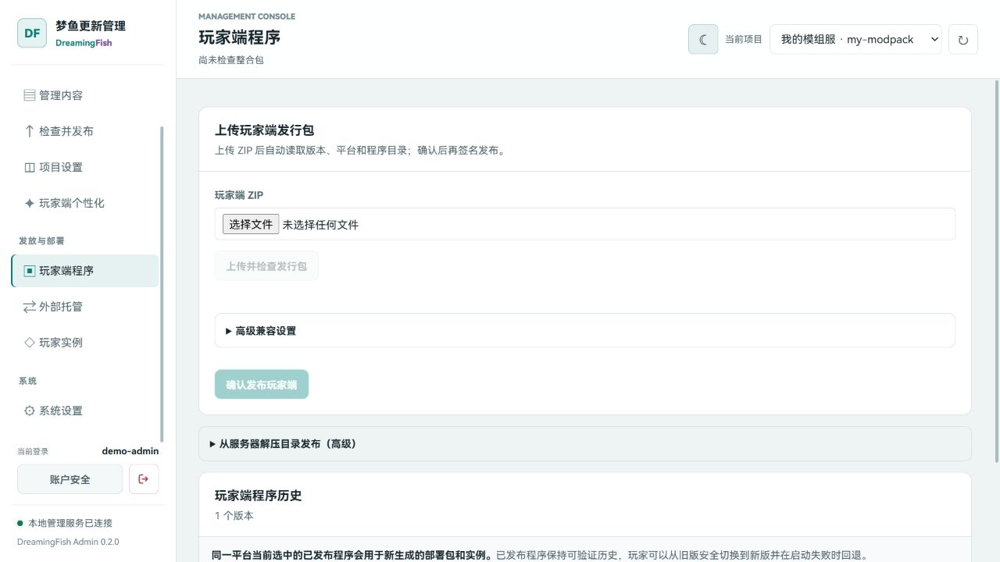
发布完成后，到“玩家实例”选择平台和原整合包对应版本，点击“下载部署 ZIP”。手上已有完整整合包，就选它当时的版本；只有基础 Forge 实例，就选当前最新发布。需要把部署包保存到管理服务器时，填写输出父目录并选择“写入服务器目录”。
生成首次部署包的界面是这样的：

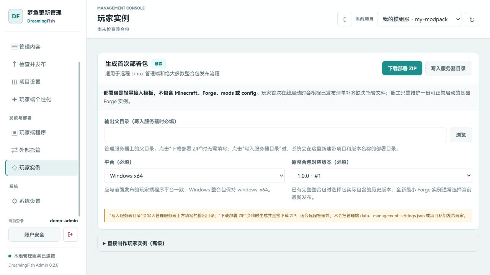
如果你能直接访问玩家实例所在的目录（比如管理端和游戏实例在同一台电脑），「玩家实例」页下方还有直接制作完整玩家实例的高级方式：它会把更新器、Bootstrap Agent、项目绑定和签名基线直接写进 Minecraft 实例目录，不用再合并部署包；远程管理端做 Windows 整合包时，还是推荐用上面的部署包。
部署包导出来，应该是这样的：
- 输出目录/系统按项目与版本自动命名
- .dreamingfish-bootstrap/Agent、绑定与基线
- bootstrap-agent.jar启动引导
- project-binding.json项目绑定
- bundled-release/签名基线
- DreamingFishUpdater/玩家端程序
- app/
- 0.2.0/更新器程序
- state/版本信息
- README.txt
下载 ZIP 后先解压，把里面的所有内容拖进 Minecraft 版本目录就行——例如 D:\Minecraft\.minecraft\versions\ExamplePack。注意拖的是里面的内容，不是外面的整层目录；.dreamingfish-bootstrap 是隐藏文件夹，别漏掉。
拖完之后，你的版本目录应该是这样的——红色的都是部署包带来的文件，必须完整出现在玩家端里：
- ExamplePack/最终 --gameDir 应指向这里
- .dreamingfish-bootstrap/部署包内容
- bootstrap-agent.jar
- project-binding.json
- bundled-release/签名基线
- DreamingFishUpdater/部署包内容
- app/
- 0.2.0/更新器程序
- state/版本信息
- mods/首次启动会检查并补齐
- config/首次启动会检查并补齐
- saves/玩家世界存档
- options.txt
- ExamplePack.jsonHMCL 接入时修改 arguments.jvm
红色部分是部署包带来的，一个都不能少；mods、config 等托管内容会在玩家首次在线启动时被检查并补齐——已经配置好的内容不会被重复安装。
让启动器加载 Bootstrap Agent
实际游戏目录必须是当前版本目录，例如 .minecraft/versions/ExamplePack。HMCL 的“当前版本独立设置”可能覆盖全局版本隔离；不要只看开关，测试启动后还要确认最终命令中的 --gameDir 指向当前版本目录。
使用 PCL 时，优先在该版本的 JVM 参数中填写下面这行：
-javaagent:"{verpath}.dreamingfish-bootstrap/bootstrap-agent.jar"{verpath} 是 PCL 提供的版本目录占位符，启动时会自动变成当前版本的真实路径。它不能用于 HMCL 或其他启动器，也不要改成服主电脑上的绝对路径。
版本 JSON 的 arguments.jvm 是 PCL、HMCL 两者通用的接入方式。如果希望同一个整合包同时兼容 PCL 和 HMCL，可以使用下面的方法；不要把 ${game_directory} 直接填进 HMCL 的“Java 虚拟机参数”输入框。
打开 .minecraft/versions/版本名称/版本名称.json，找到 "arguments" 里面的 "jvm" 数组，并在数组开头追加下面这一项：
"-javaagent:${game_directory}/.dreamingfish-bootstrap/bootstrap-agent.jar"例如，原文件是：
"arguments": {
"jvm": [
"-Djava.library.path=${natives_directory}"
]
}添加后应变成：
"arguments": {
"jvm": [
"-javaagent:${game_directory}/.dreamingfish-bootstrap/bootstrap-agent.jar",
"-Djava.library.path=${natives_directory}"
]
}示例中的原参数只是演示位置；你自己的 jvm 数组可能有更多内容，必须全部保留，只新增一行并注意英文逗号。保存后完全退出并重新打开启动器，让它重新读取版本 JSON；不要设置 Windows 全局 JAVA_TOOL_OPTIONS。
PCL 用户优先使用前面的 {verpath} 参数即可；需要兼容 PCL 和 HMCL 时使用版本 JSON。同一个实例不要同时配置两种方式，否则 Agent 会被加载两次。
正确结果应包含已经展开的绝对 Agent 路径，而不是字面量 ${game_directory} 或 {verpath}。如果启动器执行了“修复版本”、重新安装 Forge 或重建版本 JSON，请再次确认该条目没有被覆盖。
分发时，你可以直接把整个版本目录发给玩家，也可以用启动器导出整合包再分享。导出整合包时要注意：整合包文件夹里要包含玩家端文件——就是刚拖进去的 .dreamingfish-bootstrap（隐藏文件夹，别漏）和 DreamingFishUpdater，缺了它们，玩家拿到手也不会有更新器。
第 6 步 · 启动下载服务#
回到“概览”，点击“▶ 启动下载服务”，服务状态变为运行中。玩家更新器就是从这个服务下载清单和文件。
验证方式：先在管理服务器上访问 http://127.0.0.1:8080/healthz，应返回 {"status":"ok"}；再从另一台电脑访问项目的公网地址，确认端口映射正确。服务运行期间管理端进程要保持运行（Linux 用 tmux 挂起的话，断开 SSH 也不会停）。

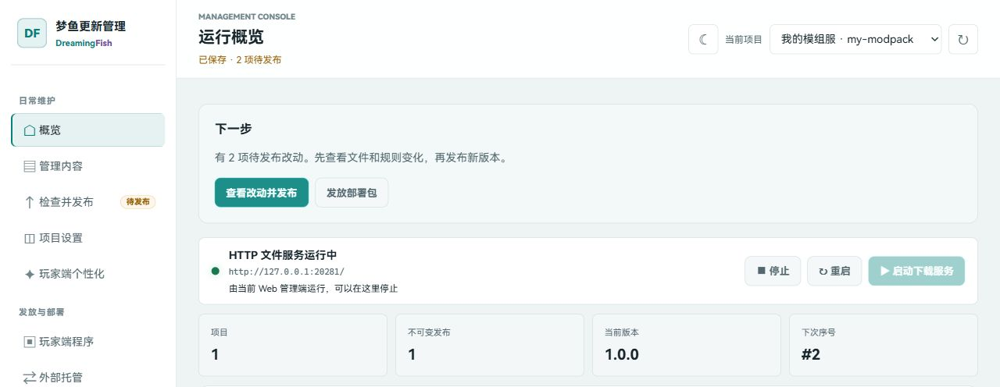
到这里，整个流程就走完了——恭喜你！你的第一个整合包项目已经可以正式发布：玩家拿到客户端后，更新器会自己检查版本、补齐文件、验证签名，然后正常启动游戏。把客户端发给玩家，等着大家上线吧！
日常的更新维护可以看「日常维护」；习惯用终端操作的话，下面就是命令行模式的菜单入口。
命令行配置模式#
对于不方便使用 Web 界面的服主，我们还提供了便捷的终端配置：终端与 Web 使用同一套数据，主要创建和发布流程共用一套服务；网页有上传清单和实时预览，终端更适合已经传到服务器的文件。输入菜单编号即可操作，按 0 退出。
第 1 步 · 进入命令行模式#
首次启动时，管理端会询问是否进入 Web 管理界面。输入 N 就会留在终端并进入主菜单。命令行模式不需要创建 Web 管理账户；它直接在管理服务器本机操作，但项目数据、签名密钥和发布结果与 Web 模式完全相同。
在管理端目录运行 dfs-admin，看到欢迎横幅和主菜单：
DreamingFish 整合包更新管理端 ================================ 主菜单 [1] 查看项目状态 [2] 创建项目 [3] 修改项目设置 [4] 扫描并发布整合包 [5] 查看发布历史 [6] 发布玩家端程序 [7] 制作玩家实例 [8] 修改服务设置 [9] 启动 HTTP 文件服务 [10] 启动 Web 管理界面 [11] 生成玩家端首次部署包 [12] 修改玩家端个性化设置 [13] 导出外部托管目录（HTTP / OSS / CDN） [0] 退出 请选择：
第 2 步 · 创建项目#
在主菜单选择 [2] 创建项目。先填写项目 ID、项目显示名称、要管理的文件目录和玩家端更新器访问地址。终端随后会介绍默认维护方式，再让你填写玩家端个性化内容。
所有文件默认普通同步，创建时不用选复杂的规则。个性化内容都有默认值，直接回车就能继续；以后从主菜单 [12] 或网页“玩家端个性化”再调整。
这里有三个容易出错的地方，和 Web 模式完全相同：
- 项目 ID：用于目录、接口和玩家端绑定，创建后不要随意更改。
- 要管理的文件目录：只放希望交给更新器管理的内容，例如
mods、config；不要复制完整.minecraft，也不要与管理端data混在一起。 - 玩家端更新器访问地址：必须是玩家电脑真正能访问的公网地址，公网端口需要已经映射或转发到管理端下载服务；不能填写
0.0.0.0、127.0.0.1、localhost或内网地址。
如果还没有项目，首次引导也会询问是否用 Web 创建；输入 N 后会直接进入同一个命令行创建流程：
还没有整合包项目。推荐在 Web 管理界面中完成首次创建，每个必填项都带有用途和示例。 按 Y 进入 Web 管理界面创建，按 N 使用命令行创建。 是否现在启动 Web 管理界面并创建第一个项目？ [Y/n]：n 创建整合包项目 ================================ [1/3] 创建必备设置 以下四项用于创建项目、定位管理目录并让玩家端连接更新服务。 【必填】项目 ID：用于目录、接口和玩家端绑定；创建后不应随意更改。 格式：小写字母或数字开头，可包含点、下划线和连字符，例如 build-server。 项目 ID（必填）：my-modpack 【必填】项目显示名称：显示在管理端项目列表中，例如服务器名称或整合包名称。 创建时也会作为玩家端主标题的默认值。 项目显示名称（必填）：我的模组服 【必填】要管理的文件目录：只放准备交给更新器管理的内容，例如 mods、config。 不需要复制完整 .minecraft；该目录必须与管理端 data 目录分开。 要管理的文件目录（必填）：D:\被管理的文件 【必填】玩家端更新器访问地址：写入玩家部署包，必须能从玩家电脑访问。 示例：http://example.com:39988；不要填写 0.0.0.0、127.0.0.1 或 localhost。 请确认公网端口已经映射或转发到管理端下载服务端口。 玩家端更新器访问地址（必填）：http://您的公网IP:39988 [2/3] 文件维护方式 所有文件默认“普通同步”：跟随发布更新，玩家可以停用模组或自行管理文件。 需要强制同步、首次提供、可选包或问题处理时， 创建后在 Web 管理界面的“管理内容”页面，或用 project policy 命令设置。 [3/3] 玩家端个性化 以下内容只影响玩家端显示，直接按回车可使用默认值。 创建后修改标题、配色、公告和页面，不用重新发布整合包，玩家下次启动会自动获取。 创建后可从主菜单 [12]“修改玩家端个性化设置”继续调整，Web 页面还提供实时预览。 首页欢迎文字（显示在大标题上方） [欢迎回家]： 玩家端主标题（显示在首页左侧的大号标题区域） [我的模组服]： 玩家端副标题（显示在主标题下方） [Minecraft 整合包更新]： 左上角中文品牌名（显示在玩家端窗口左上角） [梦鱼更新器]： 左上角英文品牌名（紧跟在中文品牌名右侧） [DreamingFish]： Minecraft 服务器地址（显示在服务器信息区域，可留空）：play.example.com:25565 项目已创建：我的模组服 (my-modpack) 项目签名私钥已保存在管理数据目录，请通过加密备份保护它。 建议下一步在 Web 管理界面添加整合包文件、扫描差异并创建首次发布。 是否现在启动 Web 管理界面继续配置？ [Y/n]：n
第 3 步 · 放入要管理的文件#
终端没有浏览器上传按钮，因此请直接把 mods、config 等内容放进刚才填写的“整合包文件目录”。这个目录就是 Web 页面里看到的管理内容目录，两种模式读取的是同一批真实文件。
- modpack-source/只放要管理的内容
- mods/模组文件
- dreamingfish-core.jar
- performance-helper.jar
- config/配置文件
把文件放进去不会立刻影响玩家。只有完成下一步扫描并发布新版本后，玩家端才会收到变化。
项目名称、文件目录和更新地址在主菜单 [3] 修改。文件维护方式用 project policy preset 设置；比如让配置文件夹只首次提供，锁定一个核心模组：
dfs-admin project policy preset my-modpack config INITIAL --directory dfs-admin project policy preset my-modpack mods/example-core-1.0.jar REQUIRED dfs-admin project policy show my-modpack
三种维护方式#
终端和 Web 使用相同的维护规则。SYNC 是普通同步，REQUIRED 是强制同步，INITIAL 是首次提供，DEFAULT 表示取消单独设置、继承文件夹。
普通同步
跟着服主更新，保留玩家选择。
更新时先备份玩家的修改，再换成发布版本。玩家额外添加的内容默认保留。
强制同步
指定内容必须和服主保持一致。
强制单个文件，只锁定这个文件；强制整个文件夹，还会把里面的额外文件备份移出。
首次提供
先给一份，之后让玩家自己管。
以后不覆盖，玩家删了也不会反复补回。服主改模板，老玩家的设置仍然保留。
用 --directory 设置文件夹时，会递归应用到里面的文件。强制同步文件夹会移出额外内容，以后新增到这个文件夹的文件也继续受规则管理。
强制同步文件只锁定指定文件，例如 config/server-required.toml。它的主要作用是禁止玩家豁免该文件，不会清理同目录的其他文件，以后新增文件也不会自动加入。
普通同步已经适合绝大多数整合包。只有核心模组、反作弊或必须保持一致的配置，才建议按需启用强制同步；规则修改后仍需重新扫描并发布才会生效。
更多入口用 dfs-admin project policy --help 查看。操作记录也可以在终端用 dfs-admin project operations my-modpack 查询，撤销和恢复版本设置见日常维护。
第 4 步 · 扫描并发布#
文件准备好后，在主菜单选择 [4] 扫描并发布整合包。终端会显示与 Web 相同的变更预览：托管文件数、总大小、变更数量、预计下载量、同步范围以及每个新增、修改或移除的文件。
重点检查移除后的处理。普通托管文件可以选择“从玩家端删除”，或者“只放弃管理并保留玩家本地文件”；强制同步目录中的文件只能随发布从玩家端移除。第一次发布通常全部是“新增”，基本不会出现这一步。
预览确认无误后，填写本次显示版本（例如 1.0.0）、最低玩家端程序版本和更新记录。发布内容是不可变的：如果发现错误，请修正整合包文件目录后再发布一个新版本，不要修改旧版本。
发布预览 9f2c1a3e-b4d2-4e7a-8c1f-1a2b3c4d5e6f 托管文件：4，总大小：128.4 MB 变更数量：3，预计下载：12.4 MB 本次内容范围：mods/、config/ 强制同步目录：（未启用） 强制同步文件：（未启用） 变更明细： 新增 mods/mod-a.jar (12.4 MB) 新增 config/mod-a.toml (2.1 KB) 修改 mods/mod-b.jar (3.2 MB) 本次显示版本（例如 1.0.1）：1.0.0 最低玩家端程序版本 [0.2.0]： 更新记录（可留空；输入 @文件路径读取 UTF-8 文本）：首次发布：接入模组与基础配置。 实际将保存的更新记录： 首次发布：接入模组与基础配置。 确认以上版本和更新记录无误并发布？ [y/N]：y 发布完成：1.0.0 / r000001-20260802-161030-ab12cd34
第 5 步 · 制作玩家端（发布玩家端程序）#
整合包文件发布完成后，第一次还需要发布玩家端程序。这个过程会把整合包数据、玩家端个性化设置、公网地址和网络传输公钥一起准备好；签名私钥始终留在管理端数据目录，不会进入玩家部署包。
玩家端程序和整合包版本是两条独立的发布线：以后只更新模组或配置时，重新发布整合包即可，不需要再次发布玩家端程序；只有更新器程序本身升级时，才需要重新执行 [6]。
在主菜单选择 [6] 发布玩家端程序，依次完成下面四项：
- 选择和玩家电脑一致的平台，Windows 通常保持
windows-x64。 - 填写玩家端发行包解压后的根目录。管理端会自动定位版本目录和
DreamingFishUpdater.exe，不要填写 ZIP 文件、app、runtime或具体版本子目录。 - 填写最低启动引导器版本，当前通常保持
0.1.2；只有重新分发了更高版本 Bootstrap Agent 时才提高。 - 核对后输入
Y，管理端会自动读取程序版本、定位 app-image、生成清单并签名。
玩家端程序发布成功后，再选择 [11] 生成玩家端首次部署包。首次部署包不包含 Minecraft、Forge、mods 或 config，它是需要合并进版本隔离实例的轻量接入文件：
[6] 发布玩家端程序 此处发布的是玩家端更新器程序，不是 mods/config 整合包内容。 平台 [windows-x64]： 玩家端发行包解压根目录：D:\待发布的完整游戏版本\player-windows-x64 最低启动引导器版本 [0.1.2]： 自动读取版本并发布这个玩家端程序？ [y/N]：y 玩家端程序已发布：0.2.0 / windows-x64 [11] 生成玩家端首次部署包 此功能不需要完整 Minecraft 实例，输出内容用于合并到本地实例根目录。 首次部署包输出父目录：D:\管理端\deploy 平台 [windows-x64]： 请选择这个下载包所对应的不可变发布版本（新版本在前）： [1] 1.0.0 r000001-20260802-161030-ab12cd34 * 输入编号或发布 ID，回车使用 * 版本： 按整合包基线 1.0.0 生成首次部署包？ [y/N]：y 首次部署包已生成：D:\管理端\deploy\my-modpack-player-deployment-1.0.0-0.2.0
部署包会包含更新器程序、Bootstrap Agent、项目绑定和所选整合包发布的签名基线。玩家第一次在线启动时，会先验证基线，再从项目公网地址拉取最新清单并补齐缺失的托管文件。
高级方式 · 直接制作玩家实例#
如果你能直接访问玩家实例所在的目录（比如管理端和游戏实例在同一台电脑），也可以选 [7] 制作玩家实例，直接把更新器、Bootstrap Agent、项目绑定和签名基线写进 Minecraft 实例目录，不用再合并部署包；远程管理端做 Windows 整合包时，还是推荐用上面的部署包：
[7] 制作玩家实例 实例中必须已经解压玩家端发行包，并包含 .dreamingfish-bootstrap/bootstrap-agent.jar。 Minecraft 版本隔离实例目录：D:\Minecraft\.minecraft\versions\ExamplePack 平台 [windows-x64]： 实例内玩家端目录 [DreamingFishUpdater]： 请选择这个下载包所对应的不可变发布版本（新版本在前）： [1] 1.0.0 r000001-20260802-161030-ab12cd34 * 输入编号或发布 ID，回车使用 * 版本： 确认写入项目绑定并核对首个玩家端程序？ [y/N]：y Prepared signed player program 0.2.0, bundled release 1.0.0 (r000001-20260802-161030-ab12cd34), and wrote project binding to D:\Minecraft\.minecraft\versions\ExamplePack\.dreamingfish-bootstrap\project-binding.json
部署包导出来，应该是这样的：
- 输出目录/系统按项目与版本自动命名
- .dreamingfish-bootstrap/Agent、绑定与基线
- bootstrap-agent.jar启动引导
- project-binding.json项目绑定
- bundled-release/签名基线
- DreamingFishUpdater/玩家端程序
- app/
- 0.2.0/更新器程序
- state/版本信息
- README.txt
接下来，把输出目录里的所有内容拖进你的 Minecraft 版本目录就行——以这个目录举例：D:\Minecraft\.minecraft\versions\ExamplePack。注意拖的是里面的内容，不是输出目录本身；.dreamingfish-bootstrap 是隐藏文件夹，别漏掉。
拖完之后，你的版本目录应该是这样的——红色的都是部署包带来的文件，必须完整出现在玩家端里：
- 您的游戏目录/Minecraft 版本目录
- .dreamingfish-bootstrap/部署包内容
- bootstrap-agent.jar
- project-binding.json
- bundled-release/签名基线
- DreamingFishUpdater/部署包内容
- app/
- 0.2.0/更新器程序
- state/版本信息
- mods/首次启动会检查并补齐
- config/首次启动会检查并补齐
- saves/玩家世界存档
- options.txt
- versions/Minecraft 本体
红色部分是部署包带来的，一个都不能少；mods、config 等托管内容会在玩家首次在线启动时被检查并补齐——已经配置好的内容不会被重复安装。
接下来，让启动器加载 Bootstrap Agent。使用 PCL 时，优先在该版本设置的「JVM 参数」（Java 虚拟机参数）中填写：
-javaagent:"{verpath}.dreamingfish-bootstrap/bootstrap-agent.jar"{verpath} 是 PCL 专属占位符，启动时会自动替换成当前版本目录。HMCL 和其他启动器不能使用它。
版本 JSON 的 arguments.jvm 是 PCL、HMCL 两者通用的接入方式。需要让同一个整合包兼容两种启动器时，打开 .minecraft/versions/版本名称/版本名称.json，找到 "arguments" 中已有的 "jvm" 数组，在数组开头追加：
"-javaagent:${game_directory}/.dreamingfish-bootstrap/bootstrap-agent.jar"例如原来是：
"arguments": {
"jvm": [
"-Djava.library.path=${natives_directory}"
]
}添加后是：
"arguments": {
"jvm": [
"-javaagent:${game_directory}/.dreamingfish-bootstrap/bootstrap-agent.jar",
"-Djava.library.path=${natives_directory}"
]
}你自己的原有 JVM 参数必须全部保留，只新增一行并注意英文逗号。保存后完全退出并重新打开启动器；不要把 ${game_directory} 直接填进 HMCL 的 JVM 参数框。PCL 用户优先使用前面的 {verpath}；同一个实例不要再同时配置两种方式。
确认 --gameDir 指向当前版本隔离目录，并且 -javaagent 后面已经是实际路径，而不是未替换的 {verpath} 或 ${game_directory}。
分发时，你可以直接把整个版本目录发给玩家，也可以用启动器导出整合包再分享。导出整合包时要注意：整合包文件夹里要包含玩家端文件——就是刚拖进去的 .dreamingfish-bootstrap（隐藏文件夹，别漏）和 DreamingFishUpdater，缺了它们，玩家拿到手也不会有更新器。
第 6 步 · 启动下载服务#
最后在主菜单选择 [9] 启动 HTTP 文件服务。这与 Web 概览页的“启动下载服务”是同一项服务：玩家更新器会通过项目的公网地址从这里下载清单和文件。服务运行期间按 Ctrl+C 停止并返回主菜单：
启动只读 HTTP 文件服务 http://0.0.0.0:8080/？ [Y/n]：y HTTP 文件服务已启动：http://0.0.0.0:8080/ 健康检查：http://0.0.0.0:8080/healthz 按 Ctrl+C 停止服务并返回主菜单。
验证方式也和 Web 模式相同：先在管理服务器上访问 http://127.0.0.1:8080/healthz，应返回 {"status":"ok"}；再从另一台电脑访问项目中填写的公网地址，确认公网端口已经正确映射到下载服务端口。服务运行期间管理端进程必须保持运行，Linux 可以放在 tmux 会话中，断开 SSH 后服务仍会继续。
如果管理了多个项目，操作前会先列出项目让你选择，直接回车使用带 * 的默认项目：
请选择项目： [1] 我的模组服 (my-modpack) * [2] 建筑服 (build-server) 输入编号或项目 ID，回车使用 * 项目：
到这里，命令行模式也走完了创建、整理、检查、发布和分发的流程。两种方式共用项目数据，可以随时切换。日常改项目用 [3]，查发布历史用 [5]，改个性化用 [12]，导出外部托管目录用 [13]；更多维护方法见「日常维护」。